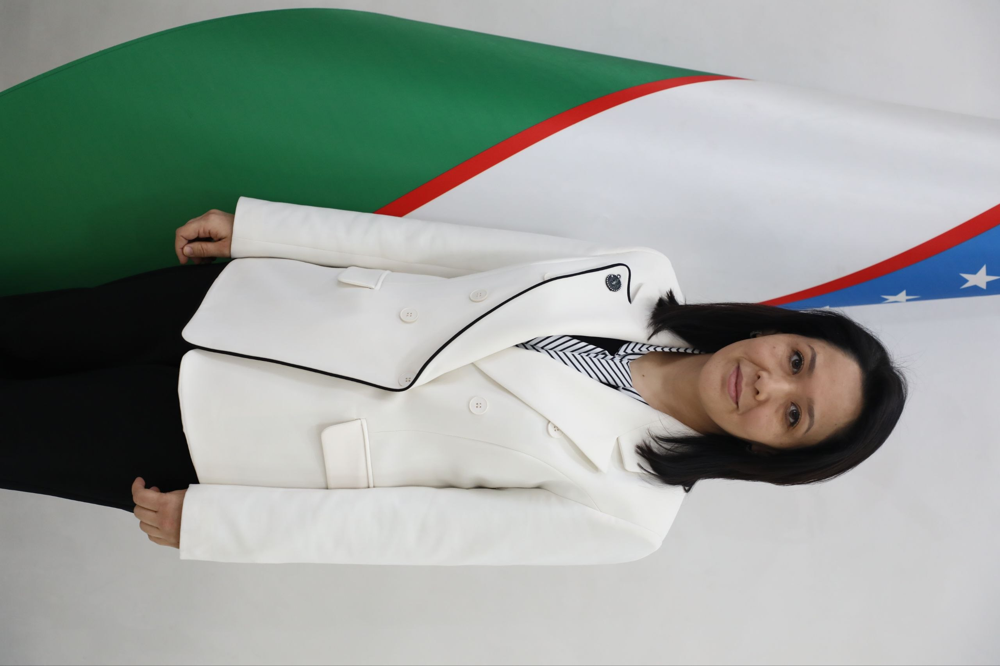
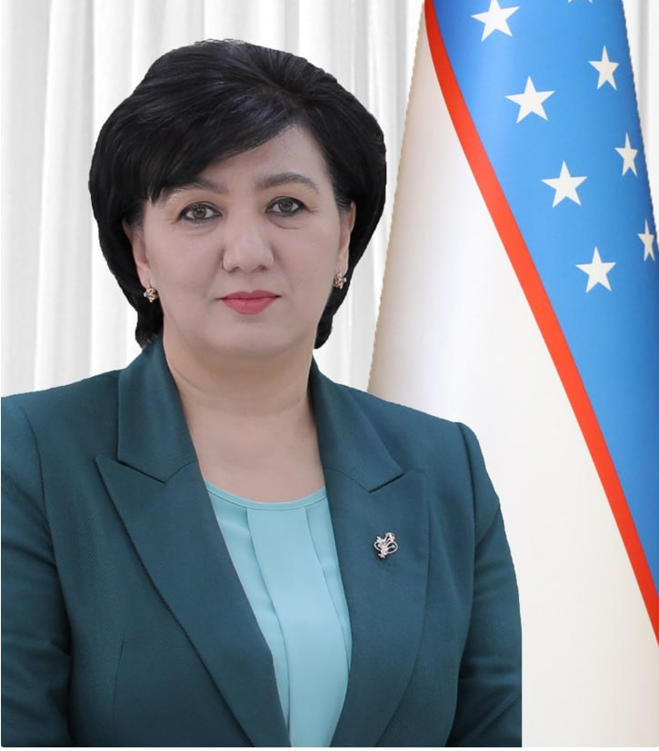
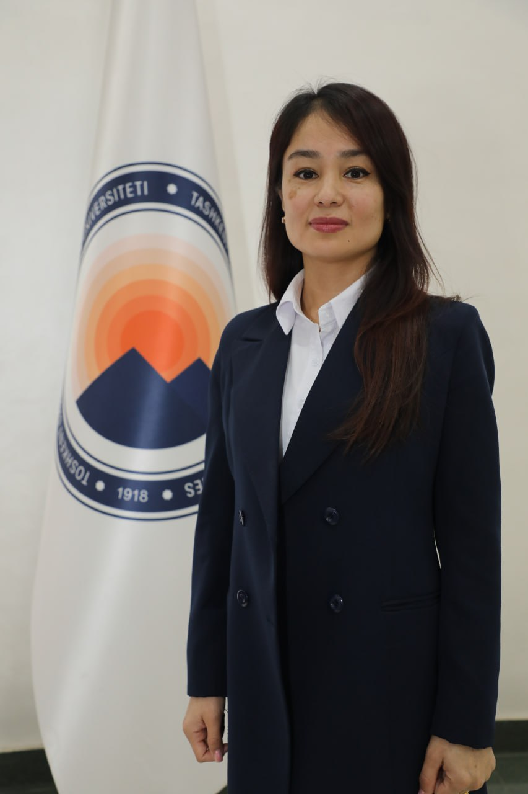

Tarjimashunoslik, tilshunoslik va xalqaro jurnalistika oliy maktabi
ISHONCH TELEFONI / CALL CENTER
+998 71 233 34 24


+998 71 233 34 24
Tarjimon, tilshunos va xalqaro jurnalist tayyorlash markazi
Tarjimashunoslik, tilshunoslik va xalqaro jurnalistika oliy maktabi 2024-yilda Toshkent davlat sharqshunoslik universiteti tarkibida tashkil etilgan. Oliy maktab sharq tillari bo'yicha malakali tarjimon, tilshunos va jurnalistlar tayyorlashga ixtisoslashgan.
2025-2026 o'quv yilida oliy maktabda 21 nafar professor-o'qituvchi faoliyat yuritmoqda. Ulardan 7 nafari fan doktori, 4 nafari fan nomzodi, 5 nafari falsafa doktori (PhD). Oliy maktabning ilmiy salohiyati 70% ni tashkil etadi.
Oliy maktabda arab, fors, turk, hind, urdu, dariy, xitoy, yapon, koreys, indonez va malay tillari o'qitiladi. Talabalarimiz xalqaro va davlat stipendiyalari sovrindorlari hisoblanadi.
Batafsil
Professor-o'qituvchilar
Fan doktorlari
Ta'lim yo'nalishlari
O'qitiladigan tillar
Bakalavriat va magistratura bosqichlarida tayyorlanadigan mutaxassisliklar
Kod: 60230200 (sharq tillari bo'yicha)
Bakalavriat. Yozma va og'zaki tarjima ko'nikmalarini chuqur egallash.
Kod: 60320100 (sharq tillari bo'yicha)
Bakalavriat. Xalqaro media va jurnalistika sohasi mutaxassislari.
Kod: 61010500 (sharq tillari bo'yicha)
Bakalavriat. Gid-tarjimon va madaniyatlararo muloqot mutaxassisligi.
Kod: 70230201 (sharq tillari bo'yicha)
Magistratura. Tilshunoslik sohasidagi ilmiy tadqiqotlar.
Kod: 70230202 (sharq tillari bo'yicha)
Magistratura. Sinxron va ketma-ket tarjima bo'yicha yuqori malaka.
O'z sohasining malakali mutaxassislari

Oliy maktab boshlig'i
Filologiya fanlari doktori, dotsent

Professor
Tarjimashunoslik va sharq tillari mutaxassisi

Professor
Tilshunoslik va qiyosiy tadqiqotlar mutaxassisi
Bizning kundalik faoliyatimizdan lavhalar




Eng so'nggi ilmiy maqolalar va tadqiqotlar
O'qituvchilarimizning maqolalari tez orada bu yerda paydo bo'ladi.